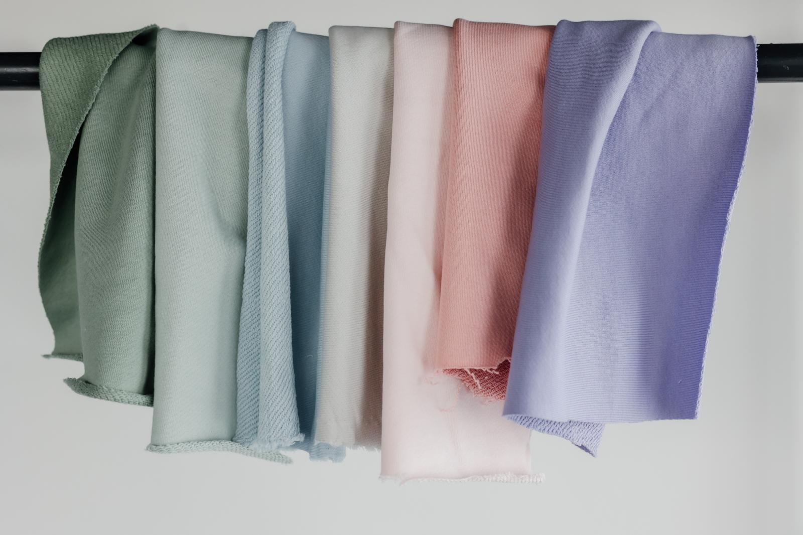
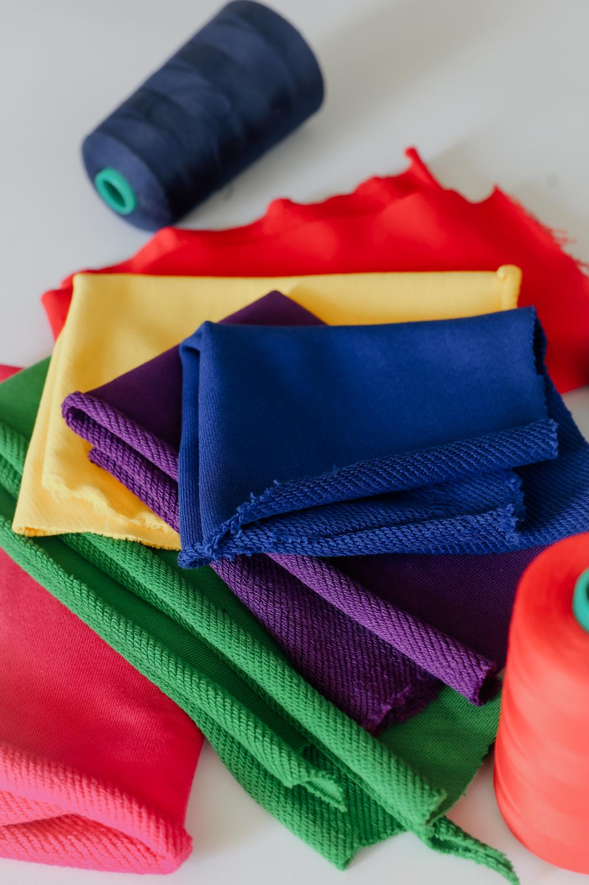
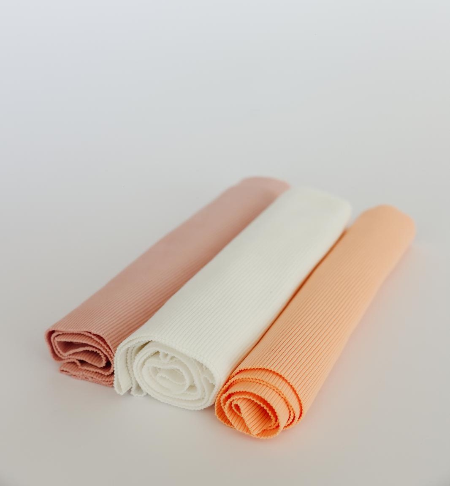
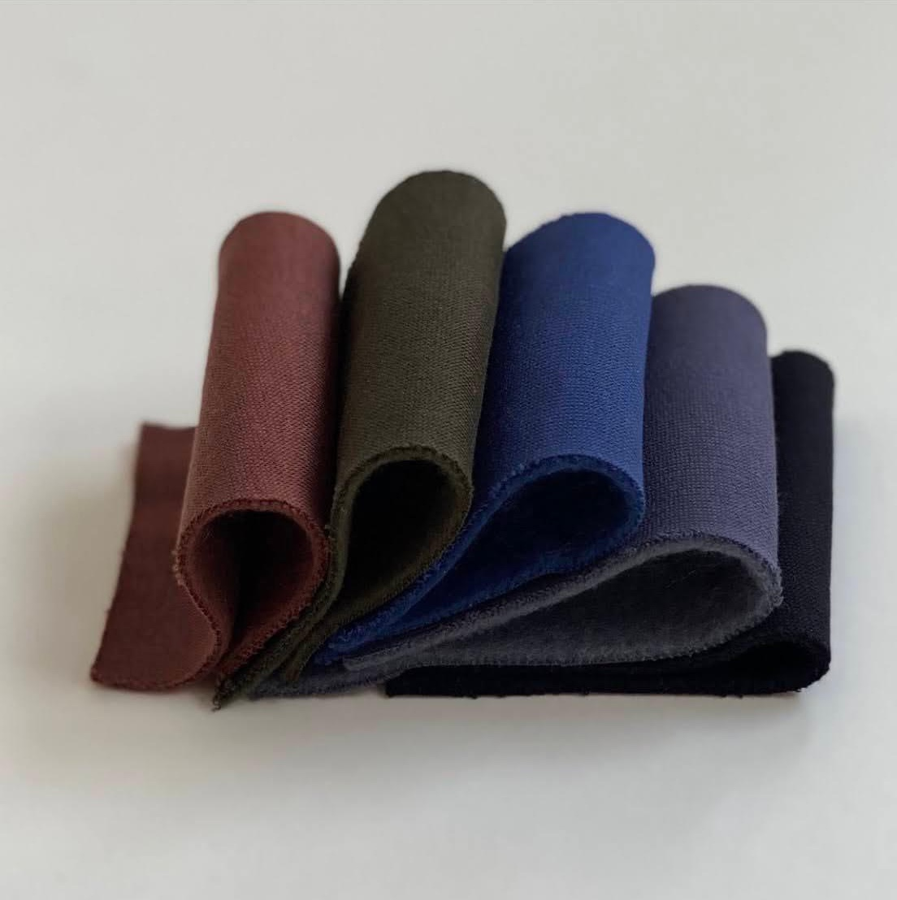
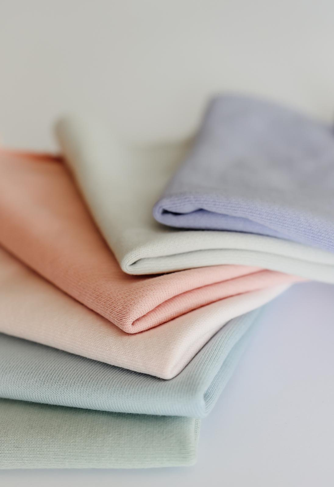
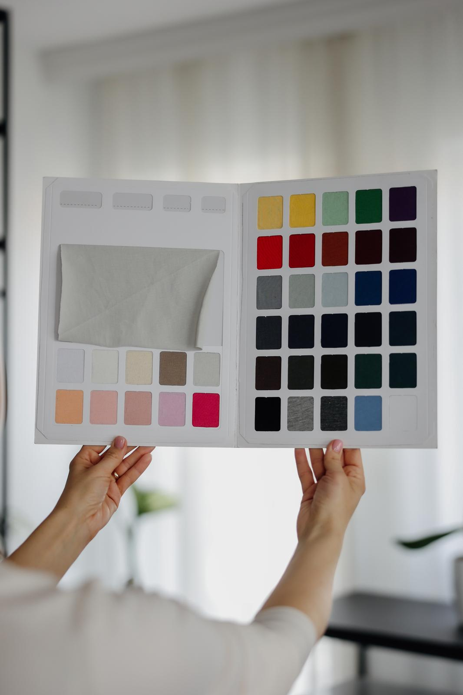

Veleprodaja i maloprodaja pamuka
Najkvalitetniji pamuk iz Turske: futer trokonac, roko futer, singl u više gramaža, full likra, futer likra i drugi

Roko futer
Pamučni materijal srednje do veće gramature, prepoznatljiv po glatkoj spoljašnjoj strani i mekšoj, prijatnoj unutrašnjosti. Prijatan je za nošenje, dobro zadržava toplotu. Najčešće se koristi za izradu dukseva, trenerki i druge udobne garderobe namenjene svakodnevnom nošenju.

Renderi
Renderi su rebrasti pamučni materijali sa dodatnom elastičnošću, prepoznatljivi po svojoj strukturi koja omogućava dobro prijanjanje uz telo. Najčešće se koriste za okovratnike, rukave, pojaseve, kao i za delove garderobe gde je potrebna fleksibilnost i oblikovanje. Imamo odgovarajući render za sve materijale.

Futer trokonac
Pamučni materijal veće gramature, sa čvrstom spoljašnjom stranom i mekšom, toplijom unutrašnjošću. Odlikuje ga izdržljivost i dobra struktura, pa je pogodan za komade koji treba da traju. Najčešće se koristi za izradu zimske odeće.

Singl pamuk
Singl je lagan i prozračan pamučni materijal, dostupan u različitim gramažama u zavisnosti od namene. Prijatan je za nošenje i dobro se prilagođava telu.Najčešće se koristi za majice, donji veš i laganiju svakodnevnu garderobu.

Stvoreno iz ljubavi prema tekstilu
Više od decenije bavimo se uvozom i veleprodajom kvalitetnih tekstila za proizvođače odeće i modne brendove. Gradimo dugoročne odnose sa partnerima koji znaju da prepoznaju kvalitetan materijal. Svaka tkanina u našoj ponudi dolazi iz proverenih izvora i iza nje stoje pouzdan kvalitet i iskustvo.
Materijali su namenjeni proizvođačima odeće, brendovima i radionicama koje traže kvalitetan pamuk za serijsku proizvodnju.
Započnite svoj sledeći projekat!
Naš tim će Vam pomoći da pronađete tkaninu koja najbolje odgovara vašim željama i zahtevima. Bilo da je to majica, trenerka, duks ili nesšto sasvim drugo. Posetite naš showroom u Novom Sadu.
Posetite nas!